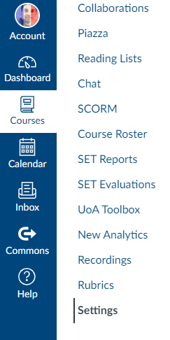
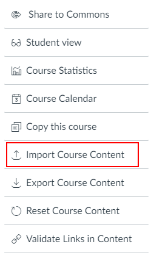
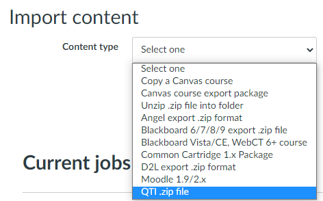
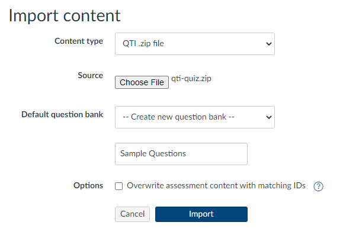
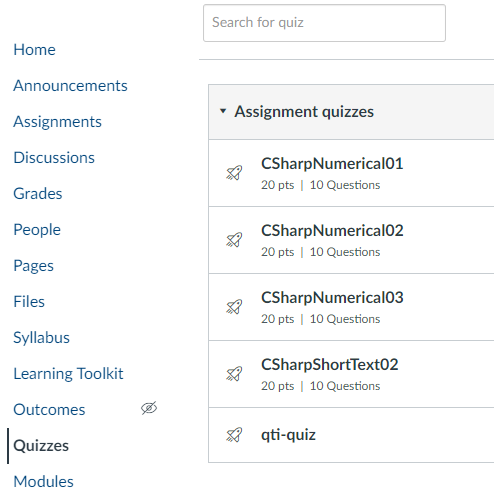
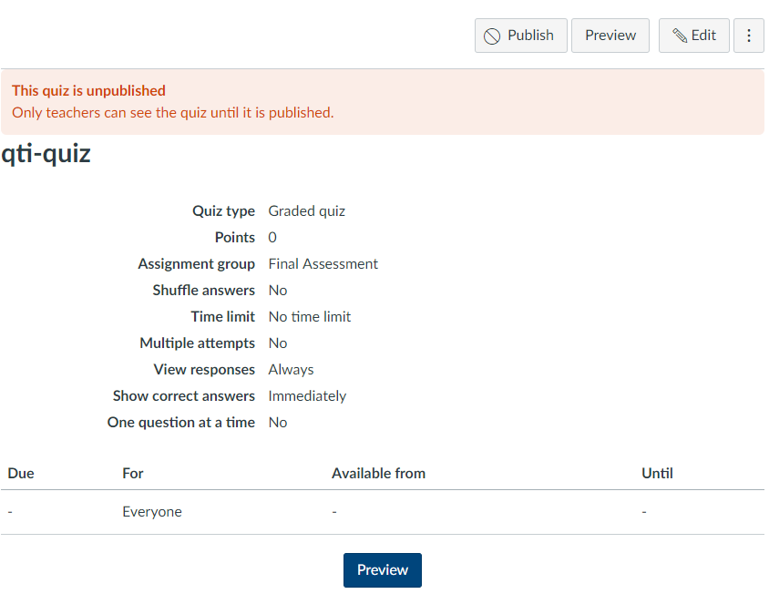
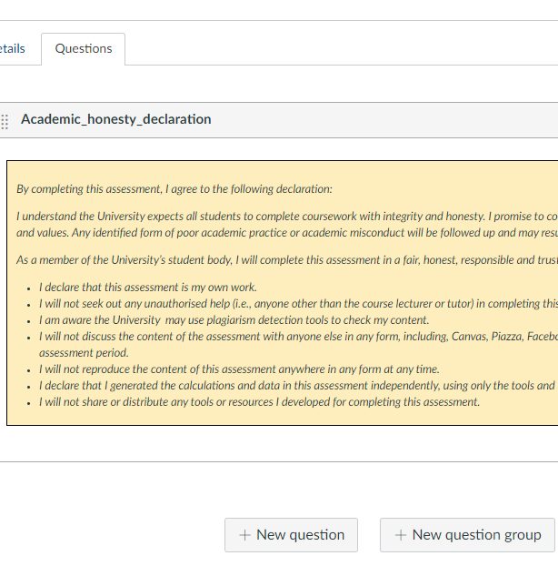
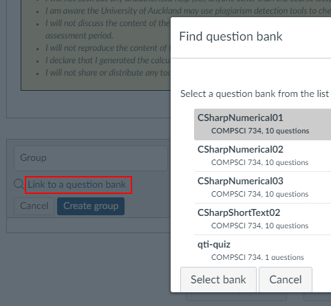
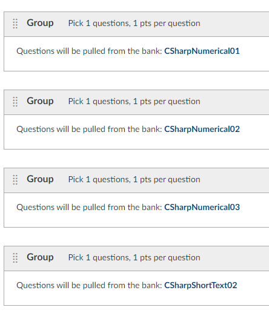

Individualized questions can be imported into Canvas LMS using QtiGen.
Importing Steps
-
First create a QTI .zip file using QtiGen. For example, the command
QtiGen -qtiVersion 1.2 -variants 10 -id qti-quiz Academic_honesty_declaration.html CSharpNumerical01.cs CSharpNumerical02.cs CSharpNumerical03.cs CSharpShortText02.cs
creates a QTI .zip file named qti-quiz.zip which has 10 variants of each of the
C# questions. The option qtiVersion must be set to 1.2, for this is the QTI version
Canvas LMS currently supports.
The HTML file includes informational text. You can have as many such informational text segments as you want.
They will appear in the quiz in the order you specified in QtiGen.
-
Now, import the QTI .zip file into Canvas. To do so, you may follow the steps below (current at the time of writing).
-
Go the Settings of the course.

-
Find and click on "Import Course Contents".

-
Select QTI .zip files as your source of import.

-
Choose the ZIP file that
QtiGen generated, and click on Import.

-
You will eventually see under Quizzes the questions you imported
as well a shell quiz named after the name of the QTI .zip file (this is
qti-quiz
in our example here).

-
Click of the shell quiz. This is
qti-quiz
in our example here.

-
This will allow you to edit the quiz. You will see the
informational texts you added to the QTI .zip file (and not
the C# questions).
Now you need add the questions from the question banks one
after the other. Click on New Question Group.

-
Click on Link to a Question Bank, select your
first question bank, and click on Create Group.

-
Follow the process for all your questions, and you would
finally see all the questions added to the shell quiz.

-
Edit the quiz to adjust its settings as required.